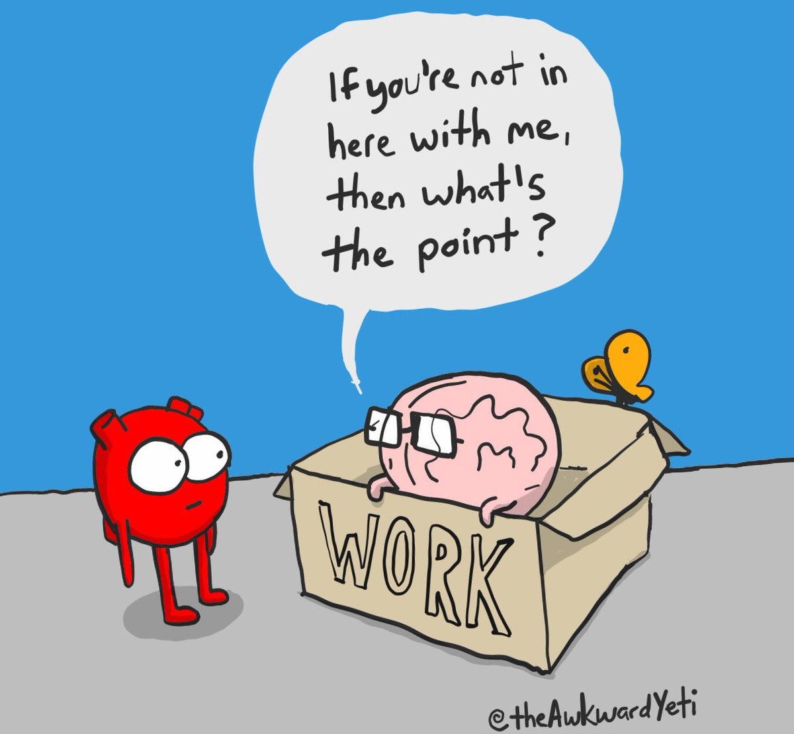

Welcome to My Digital Portfolio
http://theawkwardyeti.com/chapter/heart-and-brain-2

CSS
Who I am
(My personal bio)
Instructional Design
Content Creation
Visual Design
My Process
Who I've Worked With
(Client Logos)
Let's Connect
(Links to page where someone can input dm)